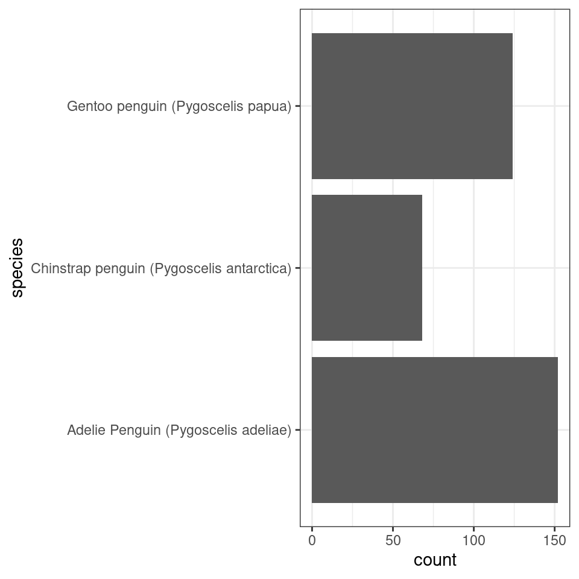
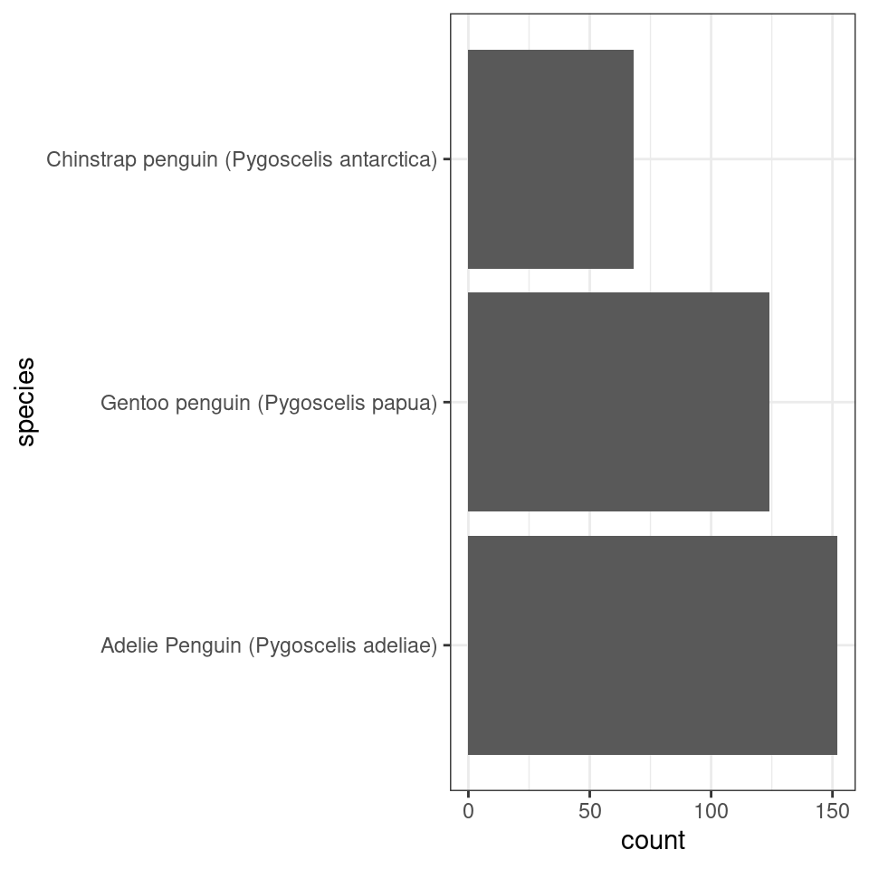
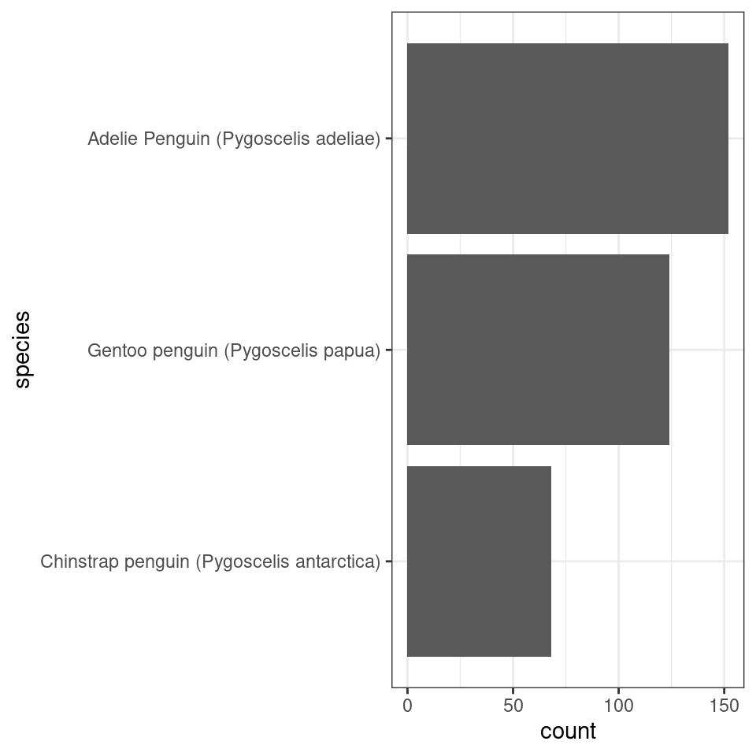
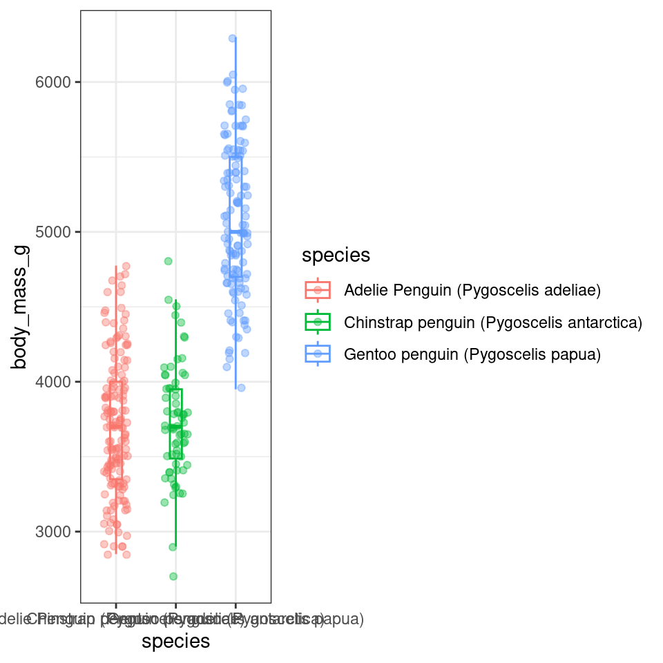

15 Factors
15.1 Anonymising factors
Sometimes you want to make your data completely anonymous so that other people can’t see sensitive information. Or because you wish to blind you own analyses.
15.2 lump factors
penguins |>
mutate(body_size = fct_lump_min(as_factor(species), 50)) |>
ggplot(aes(x = body_size,
y = flipper_length_mm))+
geom_boxplot()15.3 ordering factors
penguins |>
mutate(species = fct_relevel(species, "Adelie", "Chinstrap", "Gentoo")) |>
ggplot(aes(x = species))+
geom_bar()+
coord_flip()
With the function fct_infreq we can change the order according to how frequently each level occurs
penguins |>
mutate(species = fct_infreq(species)) |>
ggplot(aes(x = species))+
geom_bar()+
coord_flip()
penguins |>
mutate(species = fct_rev(as_factor(species))) |>
ggplot(aes(x = species))+
geom_bar()+
coord_flip()
fct_reorder allows us to order the levels based on another continuous variable
penguins |>
mutate(species = as_factor(species) |>
fct_reorder(body_mass_g,
.fun = median)) |>
# by default the levels are ordered by the median values of the continuous variable
# mean, min and max can all be included here
ggplot(aes(x = species,
y = body_mass_g,
colour = species))+
geom_boxplot(width = .2,
outlier.shape = NA)+
geom_jitter(width = .2,
alpha = .4)